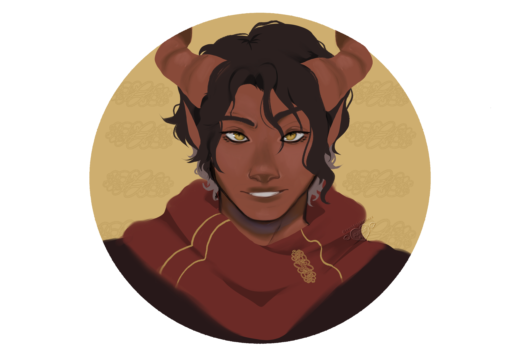
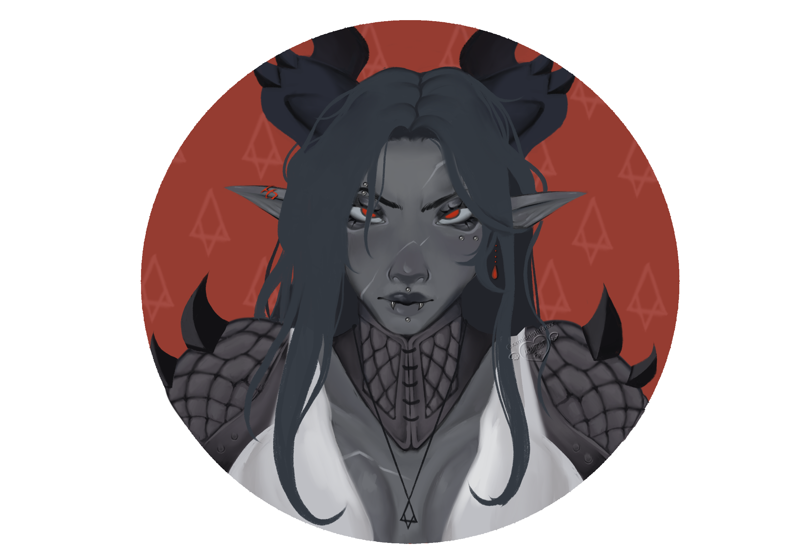

Ashten
Heirs to the Mortal Pact
Overview
Often considered nothing more than a stain upon history, inevitable to fade with the passage of time. Ashten are too young to remember the Fall of the North Star, not having been brought into this world by the gift of life or wild magic. Ashten are offspring of ambitious mortals and corrupted vessels that gave into the call of power.
Although wise in the ways of philosophy, not having the luxury of time to have built their own empires, they remain scattered across the mortal planes, often forced to focus on their own survival.
Appearance

Moderately large in terms of sheer bodily physique, an average Ashten rivals the tallest humans.
Their skin bears hues of obsidian, copper, sulphur, and deep ruby, shifting and fading with
lineage. On average, their body temperature is much higher than that of other mortals; by just
standing in the near vicinity of one, you can feel their body emitting heat from their skin.
The appearance of a pure Ashten is unmistakable from their silhouette alone. Their horns come in
all shapes and sizes and continue to grow throughout their life. Their ears point upward,
independent of their state of mind. Their noses lay flat on their face, with a pronounced
discoloration where their nostrils are, akin to an animalistic nose.

Ashten can have round, vertical slit, or horizontal slit pupils, but all Ashten pupils glow with
the colour of their mother's eyes. The glow varies from barely visible in the dark to impossible
to ignore; it is the last characteristic that remains in all Ashten bloodlines.
They possess unguligrade legs, ending in hooves. Apart from those living in larger cities, most
wear horseshoes rather than footwear. Compared to humans, Ashten are hairier, with their hair
usually being stronger and darker.
Although considered their own race, Ashten are capable of producing offspring with humans, with
Ashten defining characteristics like horns, ears, and skin tones fading over generations.
Culture
The story of Ashten creation is carried through generations in songs, stories, and word of mouth.
Over time, it has been transformed into a tale to teach humility. It is their only known origin,
even though not everyone believes in it; the actual origin of Ashten is a mystery no mortal has
solved. Ashten possess incredible regenerative abilities, capable of regrowing missing limbs over
the course of a decade. Ashten also have a powerful survival instinct, causing them to release a
wave of fire around them in times of great distress or fear. Their hair tips are often singed, since
a single bad dream can leave them waking up to a scorched bedframe. However, some have proven to be
able to control this instinct through meditation and a clear state of mind.
Ashten, as a people, mostly assimilate into other cultures and do not seem to have any traditions of
their own. While generally accepted by the majority of people, Ashten do carry a stigma of being
troublemakers. Their personalities often clash with others, as they are inclined to question
anything and anyone; not out of disrespect, but in a constant search to improve their way of
life.
They live shorter lives due to the magical properties of their bodies, making it exceptionally hard
to justify wasting their time on school or dead-end jobs. They tend to live in the moment, mostly
concerned with today rather than tomorrow. Ashten tend to take greater risks, though not always
ones worth taking. An Ashten is often first to step up to the plate, even if it means gambling with
their life. While not strongly bound to earthly possessions, the loss of others weighs heavily on
their souls.
Stats
Size: Medium · Height: 1.3 m · Speed: 5 · Lifespan: 60–75
Attribute: +1 Mind
Feat Points: +2 Body Feat Points
When creating your character, choose one of the following:
When you take damage, release energy: deal 2 Fire Damage to adjacent enemies and gain +1 Armor for 2 turns.
When healed, gain 1 stack of Mantra. Outside combat, regenerate 1 health per hour.
Legend — The First Kindling
The story of Ashten creation is a myth not all believe in, and those old enough to remember would
not reveal the truth to mortals fearful of its repeat. The legend states; after the Fall of the
North Star, humans were more desperate than ever, desiring to go beyond their mortal restraints.
Desperate enough to pray to whoever would listen to their pleas. Their cries unfolded into the
stars, but were left unanswered. The people started losing faith. But one among them, one called
Avaris, was unshaken.
Still desiring the taste of immortality, he turned to magic, alchemy, and technology to try and
grasp at the heavens. In time, his perseverance would be rewarded. He found a way to tap into the
power of the magic that created this world, and his calls were answered. Avaris communed with a
stranger that promised him unimaginable power and wanted nothing in return, beckoning Avaris to sign
a pact that would give him the knowledge to break the mortal chains. Wary of the stranger, Avaris
took the deal nonetheless, and the stranger disappeared, leaving him with the key to power. Armed
with the information, Avaris made an elixir, a betrayal of natural law—the forbidden Ichor, for
anyone who dared to drink it. Those who tasted it felt its power immediately, their bodies twisting
and mending themselves into a new form. The benefits were immediately apparent, giving back the
power to the old and granting the young power never imagined. Word spread as more and more tasted
the newfound power. Alas, they were still trapped in mortal bodies, the power of Ichor too much to
bear for their own flesh, which started to burn itself from the inside. Over time, even those
branded by the Ichor would succumb to the ages and fade away—not from their limited time, but
because their own bodies could not contain their power, and so they were doomed to a slow and
painful end. Avaris, finally recognizing the faults of trying to reach immortality, decides to
destroy the source of Ichor and hide the knowledge of its creation in his own tomb in a location
lost to time. Those who received the gifts of the pact were branded Ashten, a race doomed to fade
over millennia.
History
An event that left humanity longing for something more.
Approximately 1750–2000 years before the Present Era, when the story of Ashten creation takes place.
By the time the Great War takes place, Ashten have spread throughout most of the world. During the Great War, the Ashten prove themselves very capable soldiers and mostly stop being stereotyped as troublemakers.
Ashten live like any other mortal race among many empires.